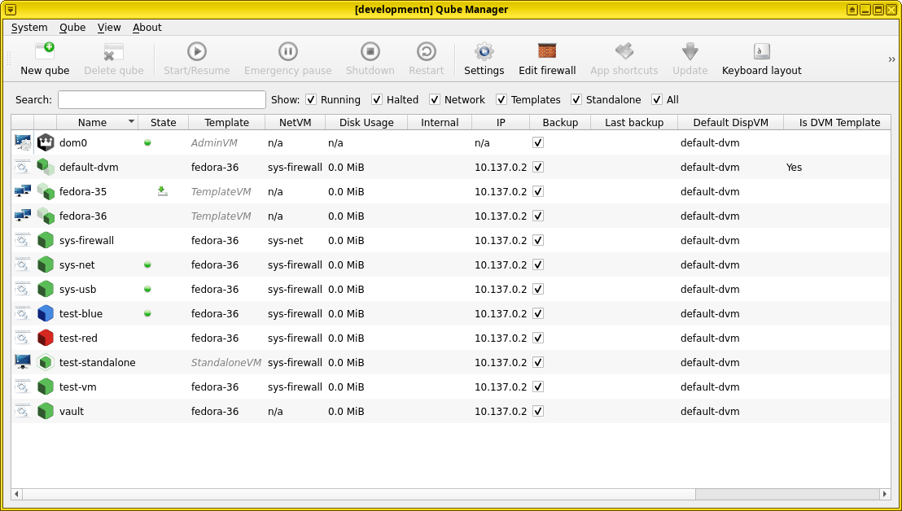

Developing Qubes OS GUI tools
In order to avoid installing Qubes OS frontend tools you are working on in your own dom0 or just to test them with less problems, you can use the mock Qubes object from the qubesadmin package.
Running programs using mock Qubes object
Where you would normally provide the Qubes object, use the qubesadmin.tests.mock_app package and one of the mock Qubes objects from it.
For example, the following code can be used to run the qui-domains tool using the mock Qubes object (this code would replace the initial part of the main function):
def main():
''' main function '''
# qapp = qubesadmin.Qubes()
# dispatcher = qubesadmin.events.EventsDispatcher(qapp)
# stats_dispatcher = qubesadmin.events.EventsDispatcher(qapp, api_method='admin.vm.Stats')
import qubesadmin.tests.mock_app as mock_app
qapp = mock_app.MockQubesComplete()
dispatcher = mock_app.MockDispatcher(qapp)
stats_dispatcher = mock_app.MockDispatcher(
qapp, api_method='admin.vm.Stats')
# continue as normal
To run a mocked program without installing it in a qube, remember to extend PYTHONPATH appropriately, for example:
~/qubes-sources/manager $ PYTHONPATH=../core-admin-client:. python3 qui/tray/domains.py
The mock object does not provide events (yet).
Note: in order to see all qubes-relevant icons (like VM icons), install the qubes-artwork package.
How does it actually work
The mock Qubes object has a collection of expected Qubes RPC calls and the responses that a real system would provide. Writing these calls manually is a bit tedious, given that most frontend tools query a lot of qube properties. For example, on a medium-sized system, initializing Qube Manager involves about 300 separate RPC calls.
If you need more calls, you can add them to the mock object using the following syntax (the following example adds listing available vm kernels):
mock_app.expected_calls[('dom0', 'admin.pool.volume.List', 'linux-kernel', None)] = \
b'0\x006.1.57-1.fc37\n6.1.43-1.fc37\ncustom_kernel\n'
If error should be thrown, you need to provide the error code and name, for example:
mock_app.expected_calls[("vmname", "admin.vm.property.Get", "property_name", None)] = \
b'2\x00QubesNoSuchPropertyError\x00\x00No such property\x00'
For details of particular calls, you can use Extending the mock Qubes object.
Available mocks
Three mocks are available in the mock_app file:
MockQubes, an extremely bare-bones Qubes testing instance, with just dom0, sys-net, and one template (fedora-36).
MockQubesComplete, a more complex setup

MockQubesWhonix, the setup above extended with several Whonix-related qubes
Extending the mock Qubes object
To collect information to modify this script, you can use the wrapper function to wrap and output all qubesd calls used by a program running on a live qubes instance.
qapp = qubesadmin.Qubes()
import qubesadmin.tests.mock_app as mock_app
qapp.qubesd_call = mock_app.wrapper(qapp.qubesd_call)
qapp._parse_qubesd_response = mock_app.wrapper(qapp._parse_qubesd_response)
Writing tests
The same mock Qubes can also be used to write tests. You can use the wrappers above to check which calls are made when certain actions are performed, and add them to the mock objects in the following way:
# this is an excerpt from tests for Qubes Global Config tool
clockvm_combo.set_active_id('test-blue')
mock_qapp.expected_calls[('dom0', 'admin.property.Set',
'clockvm', b'test-blue')] = b'0\x00'
basics_handler.save()
If the call is made correctly, the test will continue successfully; if an unexpected call is made, the test will fail.
Caution: the mock Qubes object does not react to changes like a normal Qubes object does. Further queries to the test object will continue to return initial values.
More information
For more insight into developing GUI tools for Qubes and some UX tips and tricks, you can watch marmarta's talk from the Qubes OS Summit Design for Hackers and How To Contribute to GUI Tools.